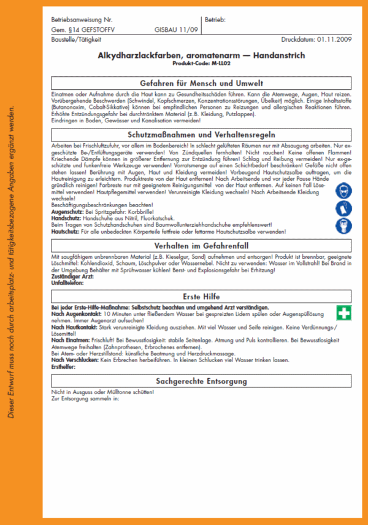
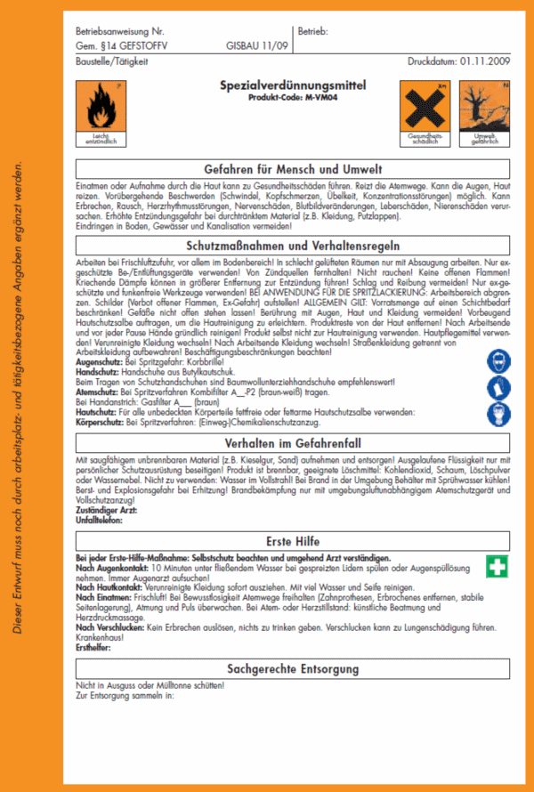

Ersatzstoffe - Ersatzprodukte - Ersatzverfahren
Produkt-Code ist die Zuordnung von Produkten zu einer
Produktgruppe; siehe Gebinde, Sicherheitsdatenblätter, Technische
Merkblätter und Preislisten der verwendeten Produkte. Diese Produkt-/gruppen-Information unterstützt Sie bei der Durchführung der Gefährdungsbeurteilung nach § 6 der neuen Gefahrstoffverordnung und kann ggf. für Dokumentationszwecke verwendet werden. Betriebsspezifische oder tätigkeitsbezogene Abweichungen oder Ergänzungen sind dann im Kapitel "Gefährdungsbeurteilung" anzugeben. |
Im Handanstrich ist nicht mit einer Überschreitung der Grenzwerte
zu rechnen, wenn weniger als 2,5 l des Produktes pro Schicht verarbeitet
werden.
Eine Grenzwertüberschreitung ist bei Anwendung im Spritzverfahren ohne
Absaugung und bei Zugabe von Verdünnungsmitteln zu erwarten.
Einatmen oder Aufnahme über die Haut kann zu Gesundheitsschäden
führen.
Kann die Atemwege, Augen und Haut reizen: z.B. Brennen, Augentränen,
Jucken.
Vorübergehende Beschwerden wie Schwindel, Kopfschmerzen,
Konzentrationstörungen, Übelkeit können auftreten. Einige
Inhaltsstoffe (Butanonoxim, Cobalt-Sikkative) können bei empfindlichen
Personen zu Reizungen und allergischen Reaktionen führen.
Entfettet die Haut.
Zusätzliche Gefährdung beim Spritzverfahren:
Erbrechen, Nervenschäden, Leberschäden, Nierenschäden,
Blutbildveränderungen, Herzrythmusstörungen.
Im Arbeitsbereich keine Lebensmittel aufbewahren
sowie weder essen, trinken, schnupfen noch rauchen!
Berührung mit Augen, Haut und Kleidung vermeiden!
Vorbeugend Hautschutzsalbe auftragen, um die Hautreinigung
zu erleichtern.
Produktreste von der Haut entfernen!
Nach Arbeitsende und vor Pausen Hände gründlich reinigen!
Farbreste nur mit einem geeigneten Reinigungsmittel
von der Haut entfernen. Auf keinen Fall Löse-/Verdünnungsmittel
für die Hautreinigung verwenden!
Hautpflegemittel nach der Arbeit verwenden (rückfettende
Creme).
Verunreinigte Kleidung wechseln und reinigen!
Nach Arbeitsende Kleidung wechseln!
Arbeiten bei Frischluftzufuhr, vor allem im Bodenbereich,
da Dämpfe schwerer als Luft.
Bei Arbeiten in Räumen ohne ausreichende Lüftung auftretende
Dämpfe direkt an der Entstehungs- oder Austrittstelle
absaugen.
Nur ex-geschützte Be-/Entlüftungsgeräte verwenden.
Von Zündquellen (auch elektrische Geräte ohne Ex-
Schutz) fernhalten, nicht rauchen, offene Flammen vermeiden,
kriechende Dämpfe können in größerer Entfernung
zur Entzündung führen!
Schlag und Reibung vermeiden.
Nur ex-geschützte und funkenfreie Werkzeuge verwenden.
Bei Anwendung im Spritzverfahren:
Arbeitsbereich abgrenzen, z.B. durch Flatterband! Schilder
"Feuer, offenes Licht und Rauchen verboten" und
"Warnung vor explosionsfähiger Atmosphäre" aufstellen!
Allgemein gilt:
Vorratsmenge am Arbeitsplatz auf einen Schichtbedarf beschränken.
Gefäße nicht offen stehen lassen.
Waschgelegenheit im Arbeitsbereich vorsehen.
Augendusche oder Augenspülflasche bereitstellen.
Augenschutz: Bei Spritzverfahren: Korbbrille!
Handschutz: Handschuhe aus: Nitril, Fluorkautschuk.
Beim Tragen von Schutzhandschuhen sind Baumwollunterziehhandschuhe
empfehlenswert!
Hautschutz: Für alle unbedeckten Körperteile fettfreie
oder fettarme (Öl-in-Wasser-Emulsion) Hautschutzsalbe
verwenden!
Atemschutz: Bei Spritzverfahren:
Atemschutz bei Grenzwertüberschreitung, z.B. an Vollmaske:
Kombinationsfilter A1-P2 (braun/weiß)
Kombinationsfilter A2-P2 (braun/weiß)
Bei unklaren Verhältnissen und in engen Räumen (z.B.
Schächten und Silos) nur umgebungsluftunabhängiges
Atemschutzgerät verwenden!
Körperschutz: Bei Spritzverfahren:
(Einweg-) Chemikalienschutzanzug.
Bei jeder Erste-Hilfe-Maßnahme: Selbstschutz beachten
(z.B. Handschutz, Atemschutz); immer auch Arzt verständigen!
Nach Augenkontakt: 10 Minuten unter fließendem Wasser bei
gespreizten Lidern spülen oder Augenspüllösung nehmen.
Immer Augenarzt aufsuchen!
Nach Hautkontakt: Stark verunreinigte Kleidung ausziehen.
Mit viel Wasser und Seife reinigen.
Keine Verdünnungs-/Lösemittel o.ä. verwenden.
Nach Einatmen: Person an die frische Luft bringen.
Bei Bewusstlosigkeit Atemwege freihalten (Zahnprothesen, Erbrochenes
entfernen, stabile Seitenlagerung), Atmung und Puls überwachen.
Bei Atem- oder Herzstillstand: künstliche Beatmung und
Herzdruckmassage.
Nach Verschlucken: Kein Erbrechen herbeiführen.
In kleinen Schlucken viel Wasser trinken lassen.
Dämpfe sind schwerer als Luft und bilden mit Luft
explosionsfähige Gemische.
Bei durchtränktem Material (z.B. Kleidung, Putzlappen)
besteht erhöhte Entzündungsgefahr.
Der Hand- und Hautschutz ist besonders zu beachten, weil verschiedene
Inhaltsstoffe auch durch die Haut in den Körper gelangen können.
Jugendliche ab 15 Jahren dürfen hiermit nur beschäftigt werden, wenn dieses zum Erreichen des Ausbildungszieles erforderlich und die Aufsicht eines Fachkundigen sowie betriebsärztliche oder sicherheitstechnische Betreuung gewährleistet ist.
Personen, die Umgang mit dem Stoff/Produkt haben, sind spezielle arbeitsmedizinische Vorsorgeuntersuchungen nach Grundsatz
anzubieten. Wird der Arbeitsplatzgrenzwert nicht eingehalten, sind die Vorsorgeuntersuchungen regelmäßig zu veranlassen - entsprechendes gilt bei unmittelbarem Hautkontakt zu hautresorptiven Stoffen (H-Stoffe).
Die Produktgruppe ist der Klasse 3 mit UN-Nummer UN1263 und
Verpackungsgruppe III zugeordnet.
Soll der Transport unter erleichterten Bedingungen (Kleinmengentransport)
durchgeführt werden, muss die transportierte Menge in Litern mit dem
Faktor 1 multipliziert werden. Als Kleinmengentransporte gelten nur
Transporte, bei denen bei der Aufaddierung der Multiplikationsergebnisse
die Zahl 1000 nicht überschritten wird.
Nicht in Ausguss oder Mülltonne schütten. Abfälle nicht vermischen! Zur ordnungsgemäßen Beseitigung bzw. Rückgewinnung in beständigen, verschließbaren und gekennzeichneten Gefäßen getrennt sammeln. Restmengen sind unter Beachtung der örtlichen Vorschriften einer geordneten Abfallbeseitigung zuzuführen! Folgende EAK/AVV-Abfallschlüssel können in Frage kommen:
Flüssige Produktreste:
080111* Farb- und Lackabfälle, die organische Lösemittel oder andere gefährliche Stoffe enthalten
Orientierender Überblick zur inhalativen, dermalen und chemisch/physikalischen Gefährdung:
| Gefährdung durch Einatmen | |||
| Gefährdung durch Hautkontakt | |||
| Brand-/Explosionsgefährdung |
Die folgenden Angaben geben Auskunft darüber, ob die jeweiligen Punkte bei der Gefährdungsbeurteilung besonders zu berücksichtigen (- ) oder von untergeordneter Bedeutung (- ) sind.
| Handschutz | |||
| Hautschutz | |||
| Atemschutz | |||
| Augenschutz | |||
| Körperschutz | |||
| Betriebsanweisung | |||
| Ersatzstoff notwendig | |||
| Grenzwertüberschreitung | |||
| Vorsorgeuntersuchungen | |||
| Beschäftigungsbeschränkungen |
Die Tätigkeiten mit diesem Gefahrstoff werden entsprechend der Maßnahmen dieser GISBAU-Information durchgeführt.
Ausgetrocknete Produktreste:
080112 Farb- und Lackabfälle mit Ausnahme derjenigen, die unter 080111 fallen.
Behälter dicht geschlossen an einem kühlen, gut gelüfteten
Ort lagern.
Nicht im Pausen- oder Aufenthaltsraum lagern. Explosionsgefahr durch
Restanhaftungen bei entleerten Gebinden!
Getrennt von explosionsgefährlichen, giftigen und brandfördernden
Stoffen lagern! Getrennte Räume oder ausreichender Sicherheitsabstand
(z.B. Palettenbreite).
Darf nicht in die Hände von Kindern gelangen.
Nach Verschütten mit saugfähigem, unbrennbaren Material
(z.B. Kieselgur, Blähglimmer, Sand) aufnehmen und
wie unter Entsorgung beschrieben behandeln.
Produkt ist brennbar, geeignete Löschmittel: Kohlendioxid,
Schaum, Löschpulver oder Wassernebel. Nicht zu
verwenden: Wasser im Vollstrahl!
Bei Brand in der Umgebung Behälter mit Sprühwasser
kühlen.
Berst- und Explosionsgefahr durch Druckanstieg bei Erhitzung.
Das Eindringen in Boden, Gewässer und Kanalisation
muss vermieden werden (wassergefährdend - WGK 2).
Copyright by GISBAU 01.11.09
Erstellt nach Sicherheitsdatenblättern verschiedener Hersteller
und sonstigen Unterlagen.
Vervielfältigung erwünscht!

